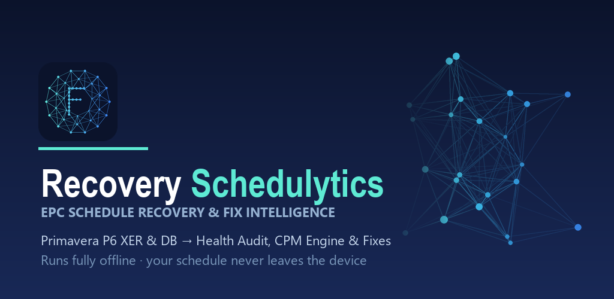

Expanding the Schedulytics suite with dedicated schedule recovery, forensic delay analysis, and field estimation software — built on the same offline, zero-cloud architecture.

Schedule health scoring against DCMA, Saudi Aramco, and SABIC profiles with a human-approved automated fix engine, custom CPM engine, and recovery simulations.
Status: In final compiling and testing. Pricing announced at launch.
Verifying target-finish recovery simulations, forensic delay attribution, and automated star-schema exports for Power BI and SYNCHRO 4D integration.
Perform rigorous forensic schedule delay analysis across 4 international methodologies to generate dispute-ready delay assessment reports for claims and arbitration.
Status: In active development in collaboration with planning and claims experts.
Developed with senior claims practitioners to guarantee full evidentiary compliance with international construction arbitration standards.
A dedicated civil and water-works quantity estimator and hydraulic calculator for Android. Covers pressurized pipe flow (Hazen-Williams / Darcy-Weisbach), tank sizing, trench and earthwork volumes, and automated Bill of Quantities (BOQ) generation. Targeting release on Google Play around mid-September 2026.